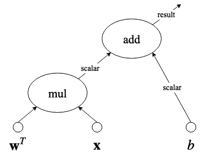

至此，你现在已经熟悉了机器学习 ( ML )和深度学习(DL)——这太棒了！你应该准备好开始编写和运行你自己的程序了。本章在设置TensorFlow和Keras的过程中为您提供帮助，并介绍它们在深度学习中的用途和目的。多巴胺是作为新的强化学习框架提出的，我们稍后会用到。本章还简要介绍了其他重要的深度学习库。
本章将涉及的主题如下:
什么是协同实验室？Colaboratory是一个基于网络的研究工具，用于进行机器学习和深度学习。它本质上就像Jupyter笔记本。如今，合作实验室变得非常流行，因为它不需要设置。
在本书中，我们将使用运行在协作实验室上的Python 3，它已经安装了我们可能需要的所有库。
Colaboratory可以免费使用，并且兼容大多数主流浏览器。负责协作工具开发的公司是Google。与Jupyter笔记本不同，在Colaboratory中，你可以在云上运行所有东西，而不是在你自己的电脑上。这里有一个问题:你需要一个谷歌账户，因为所有的合作笔记本都保存在你的个人谷歌硬盘空间里。然而，如果你没有谷歌帐户，你仍然可以继续阅读，看看如何安装你需要的每一个Python库来运行你自己的东西。尽管如此，我还是强烈建议你创建一个谷歌账户，哪怕只是为了使用这本书的合作笔记本来学习深度学习。
当您在Colaboratory上运行代码时，它运行在专用的虚拟机上，有趣的是:您可以分配一个GPU来使用！或者你也可以使用CPU。每当你不运行某个东西的时候，Colaboratory就会释放资源(你知道，因为我们都想工作)，但是你可以在任何时候重新连接它们。
如果你准备好了，继续前进并导航到这个链接:https://colab.research.google.com/
如果您有兴趣了解更多信息以及对联合实验室的进一步介绍，请搜索欢迎来到联合实验室！。现在您已经访问了前面的链接，让我们开始使用TensorFlow。
从现在开始，我们将协同实验室简称为协同实验室。人们实际上是这样称呼它的。
Tensor flow(TF)名字中有张量这个词，是vector的同义词。因此，TF是一个Python框架，它被设计成擅长与神经网络建模相关的矢量操作。它是最受欢迎的机器学习库。
作为数据科学家，我们偏爱TF，因为它是免费的、开源的，拥有强大的用户基础，并且它使用了关于张量运算的基于图形执行的最先进的研究。
现在，让我们从设置或验证您的设置是否正确的说明开始:
%tensorflow_version 2.x
!pip install tensorflow
这将安装运行TF所需的大约20个库，例如包括numpy。
注意感叹号(！)命令的开头？这是您在Colaboratory上运行shell命令的方式。例如，假设您想要删除一个名为model.h5的文件，那么您可以发出命令!rm model.h5。
import tensorflow as tf
print(tf.__version__)
这将产生以下输出:
2.1.0
!pip install tensorflow==2.1.0
我们假设您熟悉Python，因此，我们将委托您负责将适当的库与我们在本书中使用的版本相匹配。这并不困难，可以很容易地做到，如前所示，例如，使用==符号来指定版本。我们将继续展示所使用的版本。
默认情况下，协同实验室为TensorFlow自动启用了GPU支持。但是，如果您可以通过GPU访问自己的系统，并希望通过GPU支持来设置TensorFlow，安装非常简单。只需在您的个人系统上键入以下命令:
$ pip install tensorflow-gpu
但是，请注意，这是假设您已经为系统设置了所有必要的驱动程序来访问GPU。然而，不用担心，在互联网上可以搜索到大量关于这个过程的文档，例如，https://www.tensorflow.org/install/gpu。如果你遇到任何问题，你需要继续前进，我强烈建议你回来，在合作实验室工作，因为这是最简单的学习方法。
现在让我们来说明TensorFlow是如何工作的，以及它的图形范例是如何使它变得非常健壮的。
这本书是给深度学习的绝对初学者看的。因此，这里是我们想让你知道的关于TF是如何工作的。TF创建了一个图，其中包含了从输入张量到操作的最高抽象级别的执行。
例如，假设我们有已知输入向量的张量 x 和 w ，并且我们有一个已知常数 b ，并假设您要执行此操作:
如果我们通过声明和分配张量来创建这个操作，图形将类似于图2.1 中的图形:

图2.1 -张量乘法和加法运算的例子
在这个图中，有一个张量乘法运算， mul ，其结果是一个标量，需要与另一个标量 b 相加， add 。请注意，这可能是一个中间结果，在实际的计算图中，这个结果在执行树中的位置更高。有关TF如何使用图的更多详细信息，请参考本文(Abadi，m .，et.al .，2016)。
简而言之，TF找到了执行张量运算的最佳方式，将特定部分委托给GPU(如果可用),或者在CPU内核上并行化运算(如果可用)。它是开源的，在世界范围内拥有越来越多的用户。大多数深度学习专业人士都知道TF。
现在让我们讨论如何设置Keras以及它如何抽象TensorFlow功能。
如果你在网上搜索示例TensorFlow代码，你会发现它可能不太容易理解或理解。你可以找到初学者的教程，但实际上，事情很容易变得复杂，编辑别人的代码可能非常困难。Keras是一个API解决方案，可以相对轻松地开发深度学习Tensorflow模型原型。事实上，Keras不仅支持在TensorFlow之上运行，还支持在CNTK和Theano之上运行。
我们可以把Keras看作是对实际张量流模型和方法的抽象。这种共生关系变得如此受欢迎，以至于TensorFlow现在非正式地鼓励那些开始使用TensorFlow的人使用它。Keras非常用户友好，用Python很容易上手，一般意义上也很好学。
要在Colab上设置Keras，请执行以下操作:
!pip install keras
import keras
print(keras.__version__)
这将输出一条确认消息，表明它使用TensorFlow作为后端，以及Keras的最新版本，在撰写本书时是2.2.4。因此，输出如下所示:
Using TensorFlow backend.
2.2.4
Keras向用户提供功能的主要方式有两种:顺序模型和功能API。
这些可以总结如下:
我们可以将顺序模型视为从Keras开始的一种简单方法，而将函数式API视为解决更复杂问题的方法。
还记得第一章、机器学习入门的浅层神经网络吗？这就是你在Keras中使用顺序模型范例进行建模的方式:
from keras.models import Sequential
from keras.layers import Dense, Activation
model = Sequential([
Dense(10, input_shape=(10,)),
Activation('relu'),
Dense(8),
Activation('relu'),
Dense(4),
Activation('softmax'),
])
前两行代码分别导入了Sequential模型以及Dense和Activation层。一个Dense层是一个完全连接的神经网络，而一个Activation层是调用一组丰富的激活函数的一种非常特殊的方式，比如ReLU和SoftMax，就像前面的例子一样(这些将在后面详细解释)。
或者，你可以做同样的模型，但是使用add()方法:
from keras.models import Sequential
from keras.layers import Dense, Activation
model = Sequential()
model.add(Dense(10, input_dim=10))
model.add(Activation('relu'))
model.add(Dense(8))
model.add(Activation('relu'))
model.add(Dense(4))
model.add(Activation('softmax'))
为神经模型编写代码的第二种方式看起来更加线性，而第一种方式看起来更像是用Pythonic的方式来处理一系列项目。这其实是一回事，你可能会对这种或那种方式产生偏好。但是，请记住，前面的两个例子都使用了Keras顺序模型。
现在，仅出于比较目的，这是您如何编码完全相同的神经网络架构，但是使用Keras Functional API范例:
from keras.layers import Input, Dense
from keras.models import Model
inputs = Input(shape=(10,))
x = Dense(10, activation='relu')(inputs)
x = Dense(8, activation='relu')(x)
y = Dense(4, activation='softmax')(x)
model = Model(inputs=inputs, outputs=y)
如果你是一个有经验的程序员，你会注意到函数式API风格允许更多的灵活性。它允许您定义输入张量，以便在需要时将它们用作模型不同部分的输入。然而，使用函数式API确实假设您熟悉顺序模型。因此，在本书中，我们将从顺序模型开始，随着我们向更复杂的神经模型发展，我们将继续使用函数式API范式。
就像Keras一样，也有其他Python库和框架允许我们以相对较低的难度进行机器学习。在写这本书的时候，最流行的是Keras，第二流行的是PyTorch。
在写这本书的时候，PyTorch是第三受欢迎的整体深度学习框架。尽管与TensorFlow相比，它在世界上相对较新，但它的受欢迎程度一直在增加。PyTorch的一个有趣之处是它允许一些TensorFlow不允许的定制。此外，PyTorch还得到了脸书的支持。
虽然这本书涵盖了TensorFlow和Keras，但我认为我们所有人都应该记住PyTorch是一个很好的替代选择，它看起来非常类似于Keras。仅供参考，下面是我们之前展示的完全相同的浅层神经网络如果用PyTorch编码将会是什么样子:
import torch
device = torch.device('cpu')
model = torch.nn.Sequential(
torch.nn.Linear(10, 10),
torch.nn.ReLU(),
torch.nn.Linear(10, 8),
torch.nn.ReLU(),
torch.nn.Linear(8, 2),
torch.nn.Softmax(2)
).to(device)
相似之处很多。此外，从Keras到PyTorch的过渡对于有积极性的读者来说应该不会太难，而且这可能是将来需要的一项不错的技能。然而，就目前而言，社区的大部分兴趣都在TensorFlow及其所有衍生品上，尤其是Keras。如果你想更多地了解PyTorch的起源和基本原理，你可能会发现这篇阅读很有用(Paszke，a .，et.al .，2017)。
深度强化学习领域一个有趣的最新进展是多巴胺。多巴胺是深度强化学习算法快速原型化的框架。这本书将非常简要地介绍强化学习，但是你需要知道如何安装它。
众所周知，在强化学习领域，多巴胺对新用户来说很容易使用。还有，虽然它不是谷歌的官方产品，但是它的大部分开发者都是谷歌人。在目前的状态下，在写这本书的时候，这个框架非常紧凑，并且提供了现成的算法。
要安装Dopamine，您可以运行以下命令:
!pip install dopamine-rl
您可以通过简单地执行以下命令来测试多巴胺的安装是否正确:
import dopamine
除非有错误，否则不会提供任何输出。通常，多巴胺会利用它之外的许多库来做更多有趣的事情。现在，人们可以用强化学习做的一些最有趣的事情是用奖励政策训练代理人，这在游戏中有直接的应用。
例如，参见图2.2 ，它显示了一个视频游戏在学习过程中的时间快照，使用策略根据代理采取的行动来强化期望的行为:
图2.2 -游戏中强化学习问题中多巴胺代理的可视化示例
强化学习中的主体是决定下一步采取什么行动的部分。代理通过观察世界和世界的规则来完成这个任务。规则定义得越多，结果就越受约束。如果规则太宽松，代理人可能无法对采取什么行动做出好的决定。
虽然这本书没有深入到强化学习中，但我们将在本书的最后一章介绍一个有趣的游戏应用。目前，你可以阅读以下白皮书了解更多关于多巴胺的信息(Castro，P. S .等人，2018)。
除了两大巨头TensorFlow和Keras，还有其他竞争对手正在深度学习领域取得进展。我们已经讨论过PyTorch，但还有更多。这里我们简单说一下。
Caffe也是加州大学伯克利分校开发的一个流行框架(贾等，2014)。在2015-2016年变得非常流行。一些雇主仍然需要这种技能，学术文章仍然提到它的用法。然而，部分由于TF的巨大成功和Keras的普及，它的使用正在衰退。
更多关于Caffe的信息，请访问:https://caffe.berkeleyvision.org。
还要注意Caffe2的存在，它是由脸书开发的，并且是开源的。它是基于咖啡建造的，但现在脸书有了新的冠军——py torch。
Theano是由Yoshua Bengio的团队于2007年在蒙特利尔大学开发的(Al-Rfou，r .，et Al .2016)。Theano的用户群相对较老，可能见证了TF的崛起。最新的主要版本是在2017年底发布的，尽管没有新的主要版本的明确计划，但社区仍在进行更新。
更多关于Theano的信息，请访问:
http://deeplearning.net/software/theano/
出于各种原因，还有其他可能不那么受欢迎的替代方案，但在这里值得一提，以防它们的未来发生变化。这些措施如下:
|
名称 |
由开发 |
更多信息 |
|
MXNET |
街头流氓 |
|
|
CNTK |
微软 |
|
|
深度学习4J |
Skymind |
|
|
链条机 |
首选网络 |
|
|
法斯泰 |
杰瑞米·霍华德 |
本章介绍了如何建立必要的库来运行TensorFlow、Keras和Dopamine。希望你能使用Colabs来使你的学习变得更容易。您还了解了这些框架背后的基本思维模式和设计概念。尽管在撰写本书时这种框架是最流行的，但是还有其他竞争者，我们也简单介绍了一下。
在这一点上，你已经准备好开始掌握深度学习的旅程。我们的第一个里程碑是知道如何为深度学习应用准备数据。这一项对于模型的成功至关重要。无论模型有多好，有多深，如果数据没有得到正确的格式化或处理，都可能导致灾难性的性能结果。因此，我们现在将转到第3章、、准备数据。在那一章中，你将学习如何获取数据集，并为你试图用特定类型的深度学习模型解决的特定任务做准备。然而，在你去那里之前，请试着用下面的问题来测验你自己。
不，它运行在云中，但是通过一些技巧和设置，你可以将它连接到你自己的个人云中。
是的。由于Keras运行在TensorFlow上(在本书的设置中)，而TensorFlow使用GPU，那么Keras也是如此。
顺序模型；(B)功能API。
因为你能信任的强化学习框架很少，多巴胺就是其中之一。